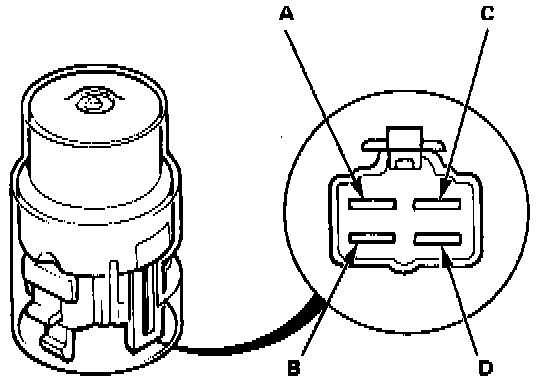
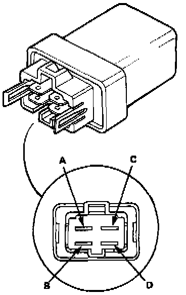

Sedan

Relay Test
NOTE: The relays for the condenser fan, radiator fan and fan timer are in the under-hood relay box. The condenser fan timer relay is on the right inner fender. The test for all four is similar:
There should be continuity between the A and B terminals when the battery is connected to the C and D terminals.
There should be no continuity when the battery is disconnected.
B-Type:

Condenser Fan Timer Relay

Other Relays